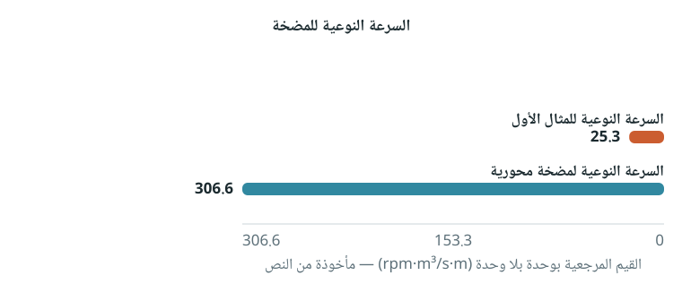

السرعة النوعية للمضخة
Pump Specific Speed
رقم لا بُعدي يجمع السرعة والتدفق والرأس في قيمة واحدة، فتصف شكل الرفّاص ونوعه — قطري أو مختلط أو محوري — بغضّ النظر عن حجم المضخة، وتُستخدم في اختيار الشكل المناسب للتطبيق.
السرعة النوعية تجيب سؤالًا هندسيًّا واحدًا: ما شكل الرفّاص الذي يناسب هذه المجموعة من السرعة والتدفق والرأس؟ فهي تُسقط حجم المضخة من المقارنة: مضخة صغيرة عالية السرعة ومضخة كبيرة بطيئة قد تحملان الرقم نفسه إذا كانتا متشابهتين هندسيًّا، ولهذا تصلح للتصنيف لا للأداء المطلق. وتُحسب من السرعة الدورانية ω والتدفق q عند نقطة الكفاءة القصوى والرأس H بالعلاقة ω √q / H^0.75، وتتغيّر قيمتها تغيّرًا حادًّا مع الوحدات، فالتحويل بين النظام الأمريكي والمتري ليس نسبة ثابتة بسيطة بل معامل 0.861 بين gpm/قدم و m³/h/متر. والقيمة المحسوبة تُقرأ على سلّم الأشكال: قيم صغيرة تعني رفّاصًا قطريًّا بقنوات ضيقة ورأس عالٍ وتدفق قليل، وقيم كبيرة تعني رفّاصًا محوريًّا بقنوات واسعة وتدفق كبير ورأس منخفض، وبينهما الرفّاص المختلط. ويُضاف إلى ذلك مؤشر ثانٍ هو سرعة السحب النوعية Nss التي تقيس المدخل مقابل NPSHr بدل الرأس، فتحكم على خطر التهوّي عند اختيار الشكل.
كيف تعمل الظاهرة؟
أساس الرقم هو التشابه الهندسي: مضختان متشابهتان هندسيًّا تعطيان النسبة نفسها بين قوى الطرد والجاذبية والسرعة، ولهذا يخرج الرقم نفسه. الرفّاص القطري يحوّل الطاقة إلى رأس بمسار طويل داخل قنوات ضيقة، فيحتاج سرعة دوران عالية مقابل تدفق قليل. وبمزيد من التدفق وقليل من الرأس يقصر المسار ويتّسع، فينتقل الشكل إلى المختلط ثم المحوري، حيث تصبح الحركة دفعًا محوريًّا لا طردًا قطريًّا. لهذا يقابل كل شكل نطاق Ns محددًا، وكل خروج عن النطاق يعني رفّاصًا يعمل خارج تصميمه.
العلاقة بالأرقام
السلّم المنشور بوحدات gpm/قدم: قطري من 500 إلى 4000، مختلط من 2000 إلى 8000، محوري من 7000 إلى 20000، مع تداخل مقصود لأن الحدود ليست فواصل حادة. والتحويل ليس مجرد ضرب: 2156 gpm/قدم تقابل 2500 بوحدات m³/h/م وتساوي 1967 بالغالون البريطاني. ولهذا فإن رقمًا مثل 2500 بلا ذكر الوحدات لا معنى له، وهو أشيع خطأ في المقارنات بين منحنيات مصنّعين مختلفين.
مفاهيم متقاربة
Ns تصف الشكل عند نقطة الكفاءة القصوى، ولا تصف كفاءة المضخة ولا جودة تصنيعها؛ ورقم عالٍ أو منخفض ليس حكمًا بالجودة بل بملاءمة الشكل للتطبيق. وتُقارن دائمًا بعد تحويل الوحدات، وأي مقارنة بين رقمين بلا وحدات تُعدّ باطلة. أما Nss فتقيس المدخل مقابل هامش السحب، وهي الأداة الحاكمة في اختيار مضخة تعمل قرب حدّ التهوّي.
حدود التطبيق
الرقم مشتق للمضخات ذات المرحلة الواحدة وللماء أساسًا؛ في المضخات متعددة المراحل يُحسب لكل مرحلة لأن الرأس يُوزّع عليها. وفي السوائل اللزجة أو ذات الغاز المذاب تنحرف حدود الأشكال المنشورة، كما أن قيم Ns في منحنيات المصنّعين قد تُحسب على نقطة أفضل كفاءة لا على النقطة التصميمية، فتختلف المقارنة اختلافًا يستوجب التحقق من الوحدات ومن النقطة المرجعية.

| الكمية | القيمة | المصدر |
|---|---|---|
| النطاق الأعلى لنهاية الرفّاص القطري (Ns بوحدات gpm أمريكي/قدم) | 4000 — | [1] |
| بداية نطاق الرفّاص المختلط في السلّم نفسه | 2000 — | [1] |
| بداية نطاق الرفّاص المحوري (المراوح والمضخات المحورية) | 7000 — | [1] |
| معامل التحويل من وحدات m³/h وm إلى gpm أمريكي وقدم | 0.861 — | [1] |
| قيمة Ns في المثال المنشور بوحدات m³/h وm (تقابل 2156 بوحدات gpm/قدم) | 2500 — | [1] |
المصادر
- 1 Pumps — Specific Speed — The Engineering ToolBox. www.engineeringtoolbox.com/specific-speed-pump-fan-d_637.html · اطُّلع عليه 2026-11-28
- 2 Pumps — Suction Specific Speed — The Engineering ToolBox. www.engineeringtoolbox.com/suction-speed-pumps-d_638.html · اطُّلع عليه 2026-11-28
استشهد بهذا المصطلح
الصيغتان مبنيتان من بيانات الصفحة نفسها: العنوان والتاريخ ورابط النسخة المنشورة.
السرعة النوعية للمضخة — Pump Specific Speed. (2026). ديوان المعرفة — انفراد. https://infiradev.com/diwan/terms/term-pump-specific-speed.html
@misc{term-pump-specific-speed2026,
title = {السرعة النوعية للمضخة},
titleaddon = {Pump Specific Speed},
howpublished = {{ديوان المعرفة — انفراد} — مرجع علمي عربي},
year = {2026},
url = {https://infiradev.com/diwan/terms/term-pump-specific-speed.html},
urldate = {2026-11-28},
note = {مراجعة علمية: Abdullah Al-Huwaidi}
}
راجعه: Abdullah Al-Huwaidi · 2026-11-28 · آخر تحديث 2026-11-28